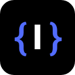
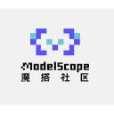

Best tools for building AI agents (2026)
Frameworks and SDKs for developers building their own agents, with tools, state and orchestration built in. We list 247 tools for building AI agents below, each with a link-checked page, pricing as the maker states it and alternatives.
Updated
247 tools: 218 open source, 5 source-available, 9 free or freemium, 9 paid, usage-based or enterprise, 6 pricing on the maker's site.
Multi-agent orchestration (26) See the full list →
Agentlas
A local-first agent OS that keeps specialist agents in a hub and spins up a temporary orchestrator for each task, with reusable methods and your choice of model and host.
Added
ChatDev
Zero-code multi-agent platform from OpenBMB, grown from a software-development agent company into a general multi-agent orchestration system.
Added
Agency Swarm
Multi-agent orchestration framework built on the OpenAI Agents SDK for creating collaborating agent "agencies" with defined roles.
Added
BeeAI Framework
Framework for building production-ready agents and multi-agent systems in Python or TypeScript.
Added
agentUniverse
Multi-agent framework with reusable collaboration patterns for building LLM agent applications.
Added
LangGraph4j
Java library for building stateful multi-agent applications as graphs, working with LangChain4j and Spring AI.
Added
Jido
Elixir framework for building supervised, fault-tolerant agents and multi-agent systems on the BEAM.
Added
KaibanJS
JavaScript-native framework for building and managing multi-agent systems with a Kanban-style board for agent tasks.
Added
UFO
Microsoft's desktop agent framework that operates Windows apps and orchestrates multi-device tasks as task graphs.
Added
Pydantic Deep Agents
Self-hosted terminal AI assistant and Python framework on Pydantic AI, with tool calling, sandboxed execution, multi-agent teams and checkpoints.
Added
MetaGPT
Multi-agent framework that assigns roles like product manager and engineer to LLM agents to build software.
Added
AutoGen
Microsoft's framework for multi-agent conversations, now archived and no longer maintained; Microsoft points new users to Microsoft Agent Framework.
Added
CrewAI
Framework for role-based multi-agent crews.
Added
AgentScope
Framework for building and running transparent multi-agent applications with visual debugging.
Added
LangChain Deep Agents
Library for long-running agents with subagents and skills; 0.7.23 (Oct 7) adds pinned_skills.
Added
CAMEL
CAMEL, one of the first multi-agent frameworks, for building role-playing agents and large agent societies.
Added
Aden Hive
Multi-agent harness for production AI.
Added
Omnigent
Open-source agent framework and meta-harness that orchestrates Claude Code, Codex, Cursor and other agents together.
Added
PraisonAI
Multi-agent framework for building a self-improving AI workforce with little code.
Added
Flyte
Type-safe orchestration for agents, ML pipelines and inference on Kubernetes.
Added
Swarms
Enterprise multi-agent orchestration framework.
Added
Open Multi-Agent
Self-hosted TypeScript agent runtime with durable approvals and verifiable run records.
Added
AG2
AG2, the community continuation of AutoGen, an open-source framework for multi-agent systems.
Added
Langroid
Python framework for multi-agent programming with LLMs.
Added
LazyLLM
Low-code framework for building multi-agent LLM applications.
Added
BotSharp
Multi-agent framework for .NET.
Added
MCP servers (19)
Microsoft Copilot Studio
Microsoft's low-code platform for building, testing and publishing AI agents that connect to business data, Microsoft 365, Power Platform connectors and MCP servers, then deploy to Teams, websites and other channels.
Added
SEAL
SEAL is an MCP server (npx sealnet-mcp) that lets AI agents send and request files and secrets with end-to-end encryption. After pairing, the default delivery route sends the file to the user's SEAL inbox and returns a handle to the model. Also has a browser app, CLI and SDK; free up to 1 GB per seal.
Added
MCP-UI
SDK that lets MCP servers send interactive web components such as forms, charts and buttons that chat hosts render inside the conversation.
Added
MCP Kotlin SDK
Official Kotlin Multiplatform SDK for building MCP servers and clients on JVM, Native, JS and Wasm, maintained with JetBrains.
Added
Xquik
Xquik is an X (Twitter) data service for searching and extracting tweets, replies, followers and profiles, monitoring accounts and posting, over REST, an OAuth MCP server and SDKs; pay-as-you-go from $10 or monthly plans from $20.
Added
Scrapling
Python web-scraping framework with fast HTTP requests, stealth browsers, adaptive parsing and concurrent crawling, plus an MCP server for agents.
Added
MCP Apps
Official spec and SDK for MCP Apps, the standard for interactive UIs like charts and forms that MCP servers render inside chat clients.
Added
Terminator
Desktop automation library and MCP server that lets AI assistants control any Windows app through the accessibility tree, like Playwright for the desktop.
Added
MCP PHP SDK
Official PHP SDK for building MCP servers and clients, maintained with the PHP Foundation and Symfony.
Added
Arcade
Actions runtime for enterprise agents with thousands of prebuilt authenticated tools, plus an open-source framework for building your own MCP servers.
Added
NitroStack
TypeScript framework with decorators and dependency injection for building, testing and deploying MCP servers and MCP apps, with a companion desktop studio.
Added
FastMCP
Pythonic framework for building MCP servers and clients quickly.
Added
MCP TypeScript SDK
Official TypeScript SDK for building MCP servers and clients.
Added
mcp-use
Full-stack MCP framework for building MCP servers, MCP apps and agents that connect to them.
Added
Zotero MCP
MCP server that connects your Zotero research library to Claude and other assistants.
Added
MCP C# SDK
Official C# SDK for building MCP servers and clients, maintained with Microsoft.
Added
MCP Java SDK
Official Java SDK for MCP servers and clients.
Added
Stripe Agent Toolkit
Stripe's agent toolkit and MCP server for customers, payments and billing.
Added
Hedera AI Studio
Open-source toolkit (Agent Kit, MCP server) for building verifiable AI agents on Hedera.
Added
Memory (19) See the full list →
Memori
An LLM-, database- and framework-agnostic memory layer that turns what agents do and say into structured, persistent state they can recall in later runs. Open source to self-host, or use Memori Cloud with an API key.
Added
Beacon
An open-source memory layer that captures traces from coding agents across harnesses and turns them into self-improving memory and visibility into what your agents did.
Added
AWorld
Agent harness from inclusionAI for building expert agents that search, reproduce and improve on ideas with their own tools and memory.
Added
Oh My OpenAgent (OmO)
Agent harness add-on (OmO) for OpenCode and Pi that runs multi-model coding agent teams with memory, planning and parallel workflows.
Added
TecAdRise Bot
TecAdRise Bot is a free, MIT-licensed Windows desktop app (Electron and Cursor SDK) for running a local team of AI agents, each with its own model, memory, skills, MCP servers, workspace and schedule.
Added
AIOS
Research AI agent operating system that handles scheduling, context switching, memory, storage and tool management for LLM-based agents.
Added
Cheshire Cat
Open-source AI agent microservice designed to be easy to understand and extend, with plugins and memory.
Added
Neuron AI
PHP framework for creating and orchestrating AI agents with LLMs, tools, vector stores and memory.
Added
tRPC-Agent-Go
Go framework for production agent systems with graph workflows, tools, memory, A2A, AG-UI, MCP, evaluation and OpenTelemetry.
Added
BaseAI
Web AI framework from Langbase for building AI agents with memory (RAG) and deploying them serverless.
Added
SimpleMem
Research-backed lifelong memory library for LLM agents that stores, compresses and retrieves text and multimodal memories, usable over MCP.
Added
LazyCodex
Agent harness for Codex that adds project memory, planning, execution and verified completion for complex codebases.
Added
Agno
Python framework and runtime for building, running and managing multi-agent systems with memory, knowledge and tools.
Added
Letta
Framework for stateful agents with long-term memory (formerly MemGPT).
Added
Deer Flow
ByteDance's open-source long-horizon agent harness that researches, codes and creates using sandboxes, memory and sub-agents.
Added
Mem0
Mem0 is an open-source memory layer for AI agents that extracts facts from conversations in a single add-only pass, links entities across memories and retrieves them in later sessions, with an Apache-2.0 SDK and a managed platform.
Added
Nanobot
Ultra-lightweight, self-hosted personal agent framework in Python with a web UI, tools, memory and MCP support.
Added
Osaurus
Native macOS harness for AI agents with any model, memory and autonomous execution.
Added
Honcho
Memory library and service for building stateful agents that remember users.
Added
Voice and phone agents (19) See the full list →
Fish Audio
Fish Audio is a voice AI platform for text to speech, voice cloning and speech to text, with a real-time API for voice agents. Its Drama 3 and S2 models take inline emotion and delivery tags such as whispering, laughing or pauses, it can clone a voice from a few seconds of audio, and its library has more than two million community voices for narration, characters, audiobooks and support agents. The Fish Speech models behind it are published on GitHub and Hugging Face.
Added
OpenComputer
OpenComputer is a platform for building and deploying long-running AI agents as code. You define an agent as a TypeScript function with its model, tools and MCP servers, deploy it with one command, and every session gets its own real cloud computer, with managed sessions, schedules and API keys kept outside the agent's runtime. Templates include a coding agent that edits a repo, runs checks and opens a draft pull request, and market-research and GTM agents; its own Slack coding agent runs on it. Pricing is pay-as-you-go for model calls and per-second machine time.
Added
Wren Pre-sign Check
Wren Pre-sign Check is a pay-per-call x402 API that an AI agent calls before it signs anything with its wallet. Send a transaction (to + data), an EIP-712 typed-data payload or untrusted text, and it returns block, review or allow, the decoded call in plain words and every finding: unlimited approvals, Permit and Permit2 signatures, setApprovalForAll, EIP-7702 delegation, contract deployment and injected instructions. With an optional wren-guard policy (allowlist, spenders, caps) it also blocks unknown recipients, over-cap amounts and lookalike addresses. It is a static check and stores nothing you send; free demos show real output.
Added
Reticle
Verification layer for AI coding agents: a dev-only SDK inside your web or desktop app lets the agent drive real flows and read network calls, app state and console, then returns a pass, fail or cannot-tell verdict with the file and line to fix; saved flows replay without an AI model and can gate CI.
Added
pooled
Peer-to-peer LLM inference in the browser: pool your laptops, phones and other devices into a room to run large open models for chat and coding agents, with no GPU server.
Added
TypeSafe Jev
Jev is TypeSafe's System One decision model, built for the small decisions inside software and agents. You send a state and typed questions (choice, score and more) and get typed answers with probabilities back instead of free-form text, so code can branch on them directly to route, classify, score or rank options. Agents can use it to settle narrow calls cheaply and save the larger LLM for open-ended work. Available through TypeSafe's API, Python and JavaScript SDKs, an agent skill, and OpenRouter.
Added
Raven
Host agent that plans complex jobs as task graphs and coordinates built-in and third-party agents for research, coding, design and on-call work.
Added
LiteLLM
Open-source AI gateway and Python SDK that calls 100+ LLM providers in the OpenAI format, with cost tracking, guardrails, load balancing and logging.
Added
FunASR
ModelScope's speech recognition toolkit for offline, streaming and edge ASR, with VAD, punctuation, speaker diarization and OpenAI-compatible/MCP serving.
Added
Superagent
SDK for AI agent safety that blocks prompt injections and unsafe tool calls, redacts PII and secrets, and runs red-team scenarios.
Added
ElevenLabs UI
Component library on shadcn/ui with orbs, waveforms and voice-agent components for building audio and agentic apps.
Added
OpenInference
OpenTelemetry-based instrumentation that traces LLM and agent framework calls so any observability backend can show them.
Added
Patter
Open-source SDK that gives your AI agent a phone number, handling speech, real-time voice and telephony carriers in Python or TypeScript.
Added
Pipecat
Open-source framework for voice and multimodal conversational agents.
Added
TEN Framework
Open-source framework for real-time multimodal voice agents, including the TEN Agent demo.
Added
Vision Agents
Stream's open framework for building real-time voice and video agents with any model.
Added
vocode
Open-source library for building voice-based LLM agents for phone calls and apps.
Added
Voiceloop
Zero-dependency JS library for an interruptible in-browser voice loop (VAD, STT, LLM, TTS).
Added
LiveKit Agents
Real-time voice and video infrastructure with an agents framework.
Added
RAG and documents (18) See the full list →
Dynamiq
Python orchestration framework for building agentic and RAG applications from reusable nodes and workflows.
Added
Pixeltable
Multimodal data layer that combines storage, transforms, indexing and retrieval in one Python library for building agents over images, video and documents.
Added
PrivateGPT
Open-source API layer that turns local models into private AI applications, with RAG, tools, skills, MCP and text-to-SQL on any OpenAI-compatible server.
Added
AstrBot
Open-source agent chatbot platform and framework that connects LLMs, plugins and tools to mainstream messaging apps for assistants, support bots and knowledge bases.
Added
DSPy
Stanford framework for programming rather than prompting language models, with optimizers that tune prompts and weights for RAG pipelines and agent loops.
Added
Langchain.rb
Ruby library for building LLM-powered applications, RAG and assistants.
Added
ScrapeGraphAI
Python library that uses LLMs and graph logic to build scraping pipelines: describe the data you want and it extracts it from websites or documents.
Added
txtai
All-in-one Python framework for semantic search, LLM orchestration and agents built on an embeddings database of vector, graph and relational indexes.
Added
UltraRAG
Low-code MCP-based framework from OpenBMB for building and debugging complex RAG pipelines with visible reasoning logic.
Added
Kiln
Free desktop app and open-source library for building AI systems with evals, RAG, agents, fine-tuning and synthetic data in one workbench.
Added
llmware
Framework for building private, local RAG and agent applications with small specialized models on AI PCs, edge and self-hosted setups.
Added
MindsHub
MindsDB's agent workspace for research, analysis, documents and coding, with a model router, a scoped vault for connected data and swappable open-source agent harnesses.
Added
LlamaIndex
Framework for agents over your data (RAG, document agents).
Added
Haystack
Open-source orchestration framework for building production LLM apps, RAG and agents.
Added
DocETL
System for agentic, LLM-powered document processing and ETL pipelines from UC Berkeley.
Added
Mastra
TypeScript framework for agents, workflows and RAG.
Added
Context7
MCP server and platform that feeds coding agents up-to-date, version-specific library documentation.
Added
Serena
MCP toolkit that gives coding agents semantic code retrieval and editing, like IDE features.
Added
Workflow automation (18)
eve
Vercel's open-source agent framework, pitched as Next.js for agents: a file-system-based way to define an agent's tools, prompts and workflows and run it in production.
Added
Sage
Sage is an MIT-licensed framework for building configurable, self-improving AI agents from reusable agent packages, tools, Skills and MCP services. It supports multi-agent workflows and multi-round self-improvement, keeping a version history of agent packages so you choose which version to adopt.
Added
Go Micro
Go framework for distributed systems where services double as tools for AI agents, with RPC, discovery, messaging and agent workflows.
Added
RocketRide
AI pipeline engine with a C++ core and 50+ Python nodes for building, debugging and deploying LLM workflows and agents from VS Code or the CLI.
Added
Workflow SDK
Vercel's TypeScript SDK for building durable, reliable and observable apps and AI agents.
Added
Cobalt
Cloud harness for coding agents that runs every task in its own environment and automates work with loops.
Added
Encord Agents
Encord's agents that plug foundation models or your own models into labeling workflows to pre-label, segment, track, route and QA image, video and multimodal data, with a no-code catalog and an open-source SDK.
Added
AutoGPT
One of the first autonomous agent projects, now a platform for building, deploying and running continuous AI agents that automate workflows.
Added
Ruflo
Open-source multi-agent meta-harness for Claude Code, Codex, and MCP clients; Oct 13 release adds Mods (mission workflows) and a single control plane with human approval.
Added
LangGraph
Framework for stateful, graph-based agent workflows.
Added
Orkes
Orchestration platform built on Conductor for durable workflows and AI agents.
Added
OpenAI Agents SDK (Python)
OpenAI's Python SDK for building multi-agent workflows; v0.23.0/0.23.1 released Oct 1-2.
Added
Trigger.dev
Platform for building and deploying durable background AI agents and workflows in TypeScript.
Added
Microsoft Agent Framework
Microsoft's framework for building and orchestrating agents and multi-agent workflows in Python and .NET.
Added
PocketFlow
Minimalist 100-line LLM framework for building agents and workflows.
Added
Julep
Platform for durable AI agent workflows that can crash, resume and retry safely.
Added
Marvin
Python library from Prefect for building AI agents and structured LLM workflows.
Added
Dagu
Self-hostable workflow orchestrator with a simple definition format and web UI, usable for agent jobs.
Added
Training and fine-tuning (7) See the full list →
AgentEnv Framework
AgentEnv Framework is Scale AI's open-source Python SDK and CLI for building RL environments for agents: containerized worlds with realistic apps and data behind an MCP gateway, plus tasks (as DAGs) that grade any agent in any sandbox.
Added
Agent Lightning
Microsoft's lightweight trainer that improves existing agents with reinforcement learning through a model proxy, without rewriting the agent's tools or control flow.
Added
NVIDIA TAO Agent Skills
NVIDIA's vision-model post-training toolkit, now packaged as agent skills so Claude Code or Codex can fine-tune, optimize and export vision foundation models from plain-English prompts.
Added
OpenPipe
Reinforcement learning tooling, including the ART library, to train better agents.
Added
AReaL
Reinforcement learning system for training LLM-based agents.
Added
Prime Intellect
Decentralized compute and open RL environment hub for training agentic models.
Added
RAGEN
Reinforcement learning framework for multi-turn LLM agents.
Added
Evals and benchmarks (5)
Agents CLI
Google's CLI and skills that teach coding assistants to build, evaluate and deploy agents on Google Cloud and the Gemini platform.
Added
Apache Maka
Incubating Apache agent harness and workspace that records everything it does and publishes benchmarked run results.
Added
EvoAgentX
Framework for building, evaluating and automatically evolving LLM agents and agentic workflows.
Added
fast-agent
Framework to build, run and evaluate agents with strong MCP, ACP and A2A support.
Added
W&B Weave
Weights & Biases toolkit for tracing and evaluating agents.
Added
More tools (116)
Sandbox0
Sandbox0 is a managed sandbox runtime that gives each AI agent an isolated cloud computer where it can run code, install software, manage files and control network access. The whole writable root filesystem persists across incremental checkpoints and grows automatically as it fills, so an agent can pause compute between tasks and resume the same sandbox later with its tools, dependencies and files intact. It adds snapshots and restore, SSH, egress proxy and credential injection, private previews, Docker in the sandbox, webhooks, warm pools and custom templates, with integrations for LangChain Deep Agents, OpenAI Agents, Vercel and GitHub CI. Sandboxes run under gVisor isolation with Nomad scheduling.
Added
thClaws
An open-source AI agent workspace in native Rust that runs locally as a GUI, CLI, headless service or web app from a single binary, with multiple model providers.
Added
opencodex
A local provider proxy that lets OpenAI Codex (CLI, app and SDK) and Claude Code run on other model providers such as Claude, Gemini, Grok, DeepSeek or local Ollama models.
Added
LCU
Brings the computer-use runtime from the ChatGPT desktop app to Claude Code, Codex CLI and Pi, so any agent harness can see and control your desktop without a Codex sign-in.
Added
Caspian
An open-source communication SDK that lets AI agents send and receive messages over email, WhatsApp, Slack, Discord and other channels.
Added
wren-guard Pro
wren-guard Pro is a TypeScript guard library for AI agents that hold or move funds on Base and other EVM chains (viem, CDP AgentKit, Privy, Eliza and similar stacks). It enforces allowlisted, capped and simulated sends, decodes calldata and signatures to flag unlimited approvals, Permit, Permit2, setApprovalForAll and EIP-7702 delegation, screens for injected instructions and watches nonces. It ships with an 89-scenario attack corpus drawn from public agent wallet incidents and a GitHub Action that fails CI if your agent's policy would let a known attack through. The original Python wren-guard is free and MIT licensed.
Added
AgentBay
Alibaba Cloud's cloud sandbox service for agents, offering ready-made browser, Linux and Windows desktop, mobile and code environments that agents control through an SDK or MCP.
Added
OpenGCUA
Open stack from Tongyi Lab's MAI-UI team for generalist computer-use agents that combine GUI clicks, accessibility trees, terminal commands, APIs and code: an OSWorld harness, a macOS real-device harness, a cross-device SDK and published task runs of eight frontier models.
Added
Golem
Agent-native platform for building durable agents and distributed apps that keep state and never duplicate work after a failure.
Added
LLM for Zotero
Zotero plugin that adds a research agent to your library so you can ask questions about papers, compare sources and save notes without leaving the reader.
Added
HarnessRouter
One API for running coding-agent harnesses such as Codex, Claude Code and Hermes as product backends, with sessions, streaming, files and failure handling.
Added
Guidance
Programming paradigm for steering language models that constrains output with regex and grammars and interleaves control flow with generation.
Added
Agent Zero
Open-source agentic framework and computer assistant whose agents use their own OS environment, create tools and self-correct.
Added
Outlines
Library from .txt for structured generation that guarantees LLM output matches a JSON schema, regex or grammar.
Added

Instructor
Library for getting validated structured outputs from any LLM, built on Pydantic with retries and type safety.
Added
assistant-ui
Open-source React components and runtimes for building AI chat and agent front ends with streaming, tools and persistence.
Added
OpenUI
Framework-agnostic generative UI framework with a compact streaming language and runtimes for React, Vue, Svelte and Angular.
Added
BAML
Typed programming language for agents and LLM functions, with runtime types, typed errors and structured outputs designed to reduce agent mistakes.
Added
TypeChat
Microsoft library for building natural-language interfaces by using types to constrain and validate LLM responses.
Added
Claude Agent SDK (Python)
Anthropic's Python SDK for building agents on Claude Code's agent loop, with the CLI bundled, custom tools and hooks.
Added
FrontierAgent
Open-source agent runtime and terminal app for long-horizon research and file work, with single-agent ReAct and parallel agent-team modes.
Added

MS-Agent
ModelScope's modular agent framework for complex, long-running tasks that combines models, tools, skills and sub-agents in a customizable harness.
Added
Atmosphere
Real-time AI agent runtime for the JVM that runs one agent class on Spring AI, LangChain4j and other backends with streaming, MCP, A2A and AG-UI.
Added
Antigravity SDK
Google's Python SDK for building stateful AI agents powered by Antigravity and Gemini, abstracting the agent loop and runtime.
Added
II-Agent
Open-source AI agent for real work from Intelligent Internet that you can run, fork and extend with your own API keys.
Added
OpenGAP
Framework-agnostic, git-native standard and CLI for defining AI agents so a repository becomes a runnable agent.
Added
Lagent
Lightweight PyTorch-inspired framework from InternLM for building LLM-based agents.
Added
Adala
HumanSignal's autonomous data-labeling agent framework, where agents learn labeling skills iteratively.
Added
AMD GAIA
AMD's open-source toolkit for building AI agents that run locally on Ryzen AI PCs, keeping data on the device.
Added
Mirascope
Lightweight Python library for calling any LLM with typed outputs and tools through one interface, without a heavy framework.
Added
Restack
Platform for designing, testing and running reliable agents at enterprise scale on Kubernetes.
Added
Pi
Minimal, extensible open-source terminal coding agent and agent toolkit from Earendil, with a multi-provider LLM API, TypeScript SDK, RPC mode and installable extensions, skills and themes.
Added
Midscene.js
Vision-driven UI automation and E2E testing framework where a GUI agent carries out natural-language steps on web, mobile and desktop apps.
Added
Botpress
Platform for building and deploying LLM-powered chatbots and agents, with a visual studio, integrations hub, CLI and SDK.
Added
RobotGo
Go library for cross-platform desktop automation and AI computer use that controls mouse, keyboard, screen, windows and processes.
Added
Sphere SDK
TypeScript SDK that gives autonomous agents an identity and wallet on the Unicity network to find, negotiate and settle payments with other agents.
Added
MCP Go SDK
Official Go SDK for building Model Context Protocol servers and clients, maintained with Google.
Added
Hyperresearch
Deep research harness that turns Claude Code or Codex into a research agent building a persistent, searchable wiki, with a hosted API and MCP.
Added
Mantis
Google's toolkit for AI coding agents to autonomously find, reproduce and patch software vulnerabilities in isolated environments.
Added
Skybridge
Full-stack TypeScript and React framework for building MCP Apps and ChatGPT Apps.
Added
Notte
Browser infrastructure for AI agents: stealth cloud browsers with CAPTCHA solving and proxies, a Playwright-based framework and serverless automations.
Added
Browserable
Open-source JavaScript browser automation library for AI agents.
Added
Cloudflare Sandbox SDK
SDK for running isolated code sandboxes on Cloudflare's network, so agents can execute commands and files safely from a Worker.
Added
Judgeval
Open-source SDK for tracing agents and scoring them with agent judges, so failures in production can be found and fixes checked.
Added
HyperFrames
HeyGen's open-source framework that renders HTML, CSS and animations into deterministic MP4 videos, usable from a CLI or by coding agents through skills.
Added
OpenSumi
Framework for building AI-native IDE products, with an MCP client and agent features.
Added
DeepSeek Harness
DeepSeek's open-source agent harness with a local web UI, built so that every tool, model and scheduled task is a swappable plugin; still a developer preview.
Added
Paperclip
Self-hosted app for running a team of AI agents like a small company, with org charts, goals, budgets and approval gates across Claude Code, Codex, OpenClaw and other harnesses.
Added
Open Interpreter
Terminal coding agent forked from OpenAI's Codex and tuned for low-cost and open-weight models, with switchable harness modes that imitate tools like Claude Code.
Added
Autodistill
Roboflow's open-source library that uses large foundation models to auto-label images and then trains small, deployable detection or classification models with no manual labeling.
Added
Telekinesis Agentic Skill Library
Python library of 250+ perception, vision and robotics skills plus a Physical AI agent that turns natural-language prompts into reviewable robot code.
Added
EyePop.ai
SDK-first vision platform where you define what to detect and it builds detection, tracking, OCR and VLM pipelines, with a Video Agent and agent skills, deployable to cloud, edge or on-prem.
Added
VideoDB Director
Open-source framework of 20+ video agents that search, summarize, clip, edit and stream video from natural-language commands, built on VideoDB.
Added
Agent-Native (Builder.io)
Open-source TypeScript framework for building agents that come with their own app UI; each action is shared by the UI, agent, API, CLI, MCP and A2A.
Added
Hermes Agent (Nous Research)
Open-source agent harness; v0.21.7 stable shipped Oct 12, v0.22.0 RCs Oct 13-14.
Added
OpenHuman
Lightweight open-source agent harness designed to run many agents cheaply on small servers.
Added
CopilotKit
Frontend stack for putting agents and generative UI into React and other apps, from the makers of the AG-UI protocol.
Added
smolagents
Hugging Face's minimal library for code-writing agents.
Added
A2A
Agent2Agent, an open protocol for agents built on different frameworks to communicate and work together.
Added
BabyAGI
Yohei Nakajima's experimental self-building agent framework that creates, stores and runs its own functions.
Added
Google ADK
Google's Agent Development Kit for building and deploying agents.
Added
Pydantic AI
Type-safe Python agent framework from the Pydantic team.
Added
Parlant
Framework for building reliable customer-facing agents with explicit behavior guidelines.
Added
OpenFang
Open-source agent operating system for running autonomous agents.
Added
AG-UI
Agent-User Interaction protocol for streaming agent state and events into frontend apps.
Added
Tambo
Generative UI SDK for React that lets agents render components.
Added
Spring AI Alibaba
Agentic AI framework for Java developers built on Spring AI.
Added
VoltAgent
TypeScript agent framework plus an engineering platform for building, observing and deploying AI agents.
Added
Strands Agents
Strands open-source SDK for building production agent harnesses in Python and TypeScript.
Added
Evolver
Self-evolving engine for AI agents with auditable genes, capsules and events.
Added
Upsonic
Python framework for building autonomous AI agents.
Added
Agent Squad
Framework for routing conversations across multiple specialized AI agents.
Added
OpenEvolve
Open-source take on AlphaEvolve that uses LLM agents to evolve better code and algorithms.
Added
Genkit
Google's open-source framework for building agentic apps in JavaScript, Go, Dart and Python.
Added
IntentKit
Self-hosted cloud cluster for running a team of collaborating AI agents.
Added
TrueForge
Open-source agent harness runtime that turns an LLM into a working agent.
Added
AgentScope Java
Java version of AgentScope for building distributed, long-running agents.
Added
Open Agents
Vercel's open-source template for building cloud agents.
Added
Cloudflare Agents
Cloudflare's SDK for building and deploying stateful AI agents on Workers.
Added
ZenML
MLOps and agent platform for building pipelines and deploying agents.
Added
Koog
JetBrains' Kotlin framework for building predictable, enterprise-ready AI agents on the JVM.
Added
Docker Agent
Docker's agent builder and runtime for defining and running agents.
Added
Agent Service Toolkit
Toolkit for running an agent service with LangGraph, FastAPI and Streamlit.
Added
Embabel
Agent framework for the JVM from the creator of Spring.
Added
RubyLLM
Ruby framework for working with LLMs, including chat, tools and agents, through one API.
Added
kagent
Cloud-native framework for running AI agents on Kubernetes.
Added
TanStack AI
Type-safe, provider-agnostic TypeScript SDK for chat, tool calling and agents.
Added
Ax
DSPy-style framework for building LLM programs and agents in TypeScript.
Added
AgentField
Build, run and scale AI agents like APIs and microservices.
Added
Agentic Context Engine
Engine that lets agents learn from their own experience.
Added
AgentFlow
Stanford's trainable agentic system where planner, executor, verifier and generator modules coordinate, with a Hugging Face demo.
Added
IBM CUGA
IBM Research's configurable generalist agent (CUGA) for enterprise web and API tasks, with a live demo on Hugging Face Spaces.
Added
Lyzr
Enterprise agent studio and framework for building secure AI agents.
Added
Viam
Software platform for building and operating robots and smart machines.
Added
Orca Agent Engine
Open Apache-2.0 runtime to build, run, and govern managed agents with choice of harness (Claude Agent SDK, Codex, Pi) and model; open-sourced Oct 6, 2026 (Developer Preview).
Added
Vercel AI SDK
TypeScript toolkit for building AI apps and agents.
Added
Agent-Reach
Lets an AI agent read and search sites like X, Reddit, YouTube and GitHub through one toolkit, without paid APIs.
Added
CowAgent
Open-source personal assistant and agent harness that plans tasks, runs tools and skills and connects to chat apps.
Added
Stagehand
Browser automation framework mixing code with natural-language actions.
Added
MCP Python SDK
Official Python SDK for building Model Context Protocol servers and clients.
Added
jcode
High-performance coding agent harness written in Rust.
Added
Agent-S
Open agentic framework that uses computers like a human through the GUI.
Added
Mobilerun
LLM-agnostic agent framework for controlling Android and iOS devices with natural language.
Added
Munder Difflin
Free, open-source harness that runs Claude Code, Codex, Gemini CLI and other terminal agents together like an office.
Added
Guardrails AI
Open-source framework for validating LLM inputs and outputs with configurable guardrails.
Added
Agent Governance Toolkit
Microsoft toolkit for policy enforcement, identity and sandboxing for AI agents.
Added
Open Connector
Open-source auth gateway connecting SaaS apps to AI agents via SDK, CLI and MCP.
Added
Failproof AI
Observability and policy enforcement for AI agent harnesses.
Added
VibeSDK
Cloudflare's open-source kit for running your own vibe-coding platform.
Added
PPTAgent
Agentic framework that generates and refines PowerPoint presentations.
Added
MCP Rust SDK
Official Rust SDK for the Model Context Protocol.
Added
OneCLI
Sandboxed agent harness for teams with secure credential handling.
Added
PentestAgent
Agent framework for black-box security testing and bug bounty work.
Added
MiroFlow
Research agent framework with web UI supporting MiroThinker and other models.
Added
Coinbase AgentKit
Coinbase's toolkit that gives any AI agent a crypto wallet and on-chain actions.
Added
SODAX SDK
Cross-network DeFi execution SDK (swaps, lending, bridging) with skills and a Builders MCP for AI-assisted development.
Added
GitHub repos (231)
| Repo | GitHub stars | Licence | Last push |
|---|---|---|---|
| 253,590 | MIT | 2026-10-21 | |
| 251,853 | MIT | 2026-10-17 | |
| 187,612 | MIT outside the autogpt_platform folder; the platform is under the Polyform Shield | 2026-10-19 | |
| 116,073 | MIT | 2026-10-21 | |
| 103,425 | MIT | 2026-10-21 | |
| 98,176 | MIT | 2026-10-07 | |
| 88,372 | BSD 3-Clause | 2026-10-21 | |
| 83,959 | MIT | 2026-10-21 | |
| 74,609 | MIT | 2026-10-21 | |
| 70,885 | MIT | 2026-01-21 | |
| 70,183 | — | 2026-10-21 | |
| 68,591 | Apache License 2.0 | 2026-10-11 | |
| 67,147 | Apache License 2.0 | 2026-10-21 | |
| 66,201 | Apache License 2.0 | 2026-10-21 | |
| 63,157 | MIT | 2026-10-21 |
Top 15 of 231 by stars. Stars and licence come from each repo, checked when the listing was last verified.
Related tasks
Popular with: AI engineers · Startup CTOs · Related searches: Open-source AI agent frameworks · Python AI agent frameworks · TypeScript and JavaScript AI agent frameworks
Tools are matched to tasks by category, use cases and what each tool says it does. Missing one? Submit it free.